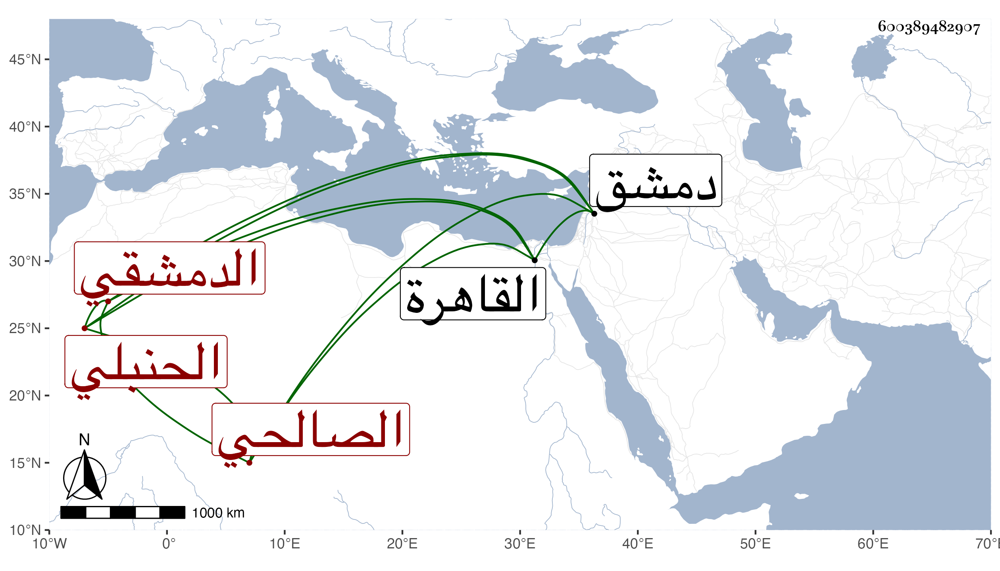

0902Sakhawi.DawLamic.ITO20230111-ara1.EIS1600.600389482907
Biography ID: 600389482907
416
عبد الرحمن بن يوسف بن أحمد بن سليمان بن داود بن سليمان بن داود الزين أبو الفرج وأبو محمد بن الجمال الدمشقي الصالحي الحنبلي ويعرف بابن قريج بالقاف والراء والجيم مصغر ، وبابن الطحان وهو أكثر . ولد في منتصف المحرم سنة ثمان وستين وسبعمائة بدمشق ونشأ بها فحفظ القرآن واشتغل يسيرا وأسمع على الصلاح بن أبي عمر مسند أحمد بتمامه فيما كان يذكر والذي وجد له في الطبقة مسند ابن عمر وابن مسعود وابن عمرو وكذا سمع عليه مآخذ العلم لابن فارس وعلى زينب ابنة قاسم بن عبد الحميد العجمي منتقي فيه ثمانية عشر حديثا من مشيخة الفخر وجزءا فيه خمسة عشر حديثا مخرجة فيها من جزء الأنصاري وكلاهما انتقاء البرزالي وعلى المحب الصامت الكثير بل قرأ عليه بنفسه وكذا سمع من إبراهيم بن أبي بكر بن عمر والشهاب بن العز ورسلان الذهبي وأبي الهول الجزري وطائفة ، وكان يذكر أنه سمع على ابن أميلة السنن لأبي داود وجامع الترمذي وعمل اليوم والليلة لابن السني وعلى البدر محمد بن علي بن عيسى بن قواليح صحيح مسلم ولكن لم نظفر بذلك كما قاله صاحبنا ابن فهد ، وحدث ببلده واستقدم القاهرة فأسمع بها ولم يلبث أن مات بها بعد أن تمرض أياما يسيرة بعد صلاة العصر من يوم الاثنين سابع عشري صفر سنة خمس وأربعين بقلعة الجبل وصلى عليه من الغد بباب المدرج في مشهد حافل فيه ابن السلطان وأركان الدولة وخلق من العلماء والاخيار تقدمهم شيخنا ودفن بتربة طقتمش ، وكان شيخا لطيفا يستحضر أشياء كثيرة ووصفه بعضهم بالامام العالم الصالح .
